Bad algorithms¶
I want to have some fun(?) implementing insanely slow algorithms for simple operations, but first here's a classic example of how not to implement an algorithm to set the scene.
Exponential complexity¶
The Fibonacci series is an integer sequence beginning \(0, 1\) where every successive digit is the sum of the previous two:
The definition
lends itself directly to a recursive implementation, e.g. in python:
def fib_recursive(n):
if n < 2:
return n
return fib_recursive(n-1) + fib_recursive(n-2)
For each call to fib_recursive up to two further calls to the function are made and thus the call stack will grow exponentially. For large \(n\) this will cause the program to run very slooooow if it doesn't run out of resources entirely and crash. This table illustrates the execution time for a small range of \(n\):
| n | F(n) | Time(ms) |
|---|---|---|
| 10 | 55 | 0.0851154 |
| 15 | 610 | 0.911951 |
| 20 | 6765 | 9.92441 |
| 25 | 75025 | 111.743 |
| 30 | 832040 | 1224.36 |
In graphical form it's clear that execution time in terms of \(n\) is linear on a log scale and thus growing exponentially:
If you compute the slope, it's about ~1.618, a.k.a the Golden ratio \(\phi\) which just happens to be the value the that ratio of successive values in the sequence tends to.
As you can see, for even fairly small \(n\) the function is taking prohibitively long to run. The number of times the function is actually called for a given value of \(n\) is a close relation of the sequence itself (unsurprisingly):
which is larger than \(F\) but grows at exactly the same rate, \(\phi\).
In algorithmic complexity terms, this is known as exponential time complexity and should be avoided at all costs. The point I'm trying to make here is that the obvious (but perhaps naiive) implementation of a mathematical function is not always the best approach, and a good (research or otherwise) software engineer should know this.
So lets try again. Python has a feature called generators which are ideal for computing sequences. The generator holds hold some state, and the next time you call it, it just picks up where it left off (the yield statement - this construct is known as a coroutine). You could implement is like this:
def fibgen():
a,b = 0, 1
while True:
yield a
a, b = a + b, a
def fib_generator(n):
fg = fibgen()
for _ in range(n): next(fg)
return next(fg)
And the execution time is vastly improved:
| n | F(n) | Time(ms) |
|---|---|---|
| 10 | 55 | 0.00524521 |
| 20 | 6765 | 0.00333786 |
| 30 | 832040 | 0.00429153 |
| 40 | 102334155 | 0.00476837 |
| 50 | 12586269025 | 0.00572205 |
| 60 | 1548008755920 | 0.00691414 |
| 70 | 190392490709135 | 0.00762939 |
| 80 | 23416728348467685 | 0.00858307 |
| 90 | 2880067194370816120 | 0.00977516 |
The data is a little noiser this time because the execution time is so much faster, but theres a clear linear trend now.
So, we've started with a worse-than-polynomial \(O(\phi^n)\) algorithm and turned it into an \(O(n)\) one. Great!
Worse-than-exponential algorithms¶
You don't hear much about such things, I suppose largely because they're utterly impractical. I haven't come across any problems that require such algorithms, but I'm sure plenty must exist.
So, perversely I decided to explore how I could contrive to solve simple problems with hopelessly inefficient algorithms and try and work out how long operations would take using them. Obviously actually running, and even testing, them is largely impractical.
Hyperoperations¶
Starting two integers \(a\) and \(b\), we formulate arithmetic operations on them as a chain of binary operations starting with the basic operation of incrementing ("succession"):
| Level | Operation | |
|---|---|---|
| 0 | Succession | \((a, b) \rightarrow a + 1\) |
| 1 | Addition | \((a, b) \rightarrow a + b\) |
| 2 | Multiplication | \((a, b) \rightarrow ab\) |
| 3 | Exponentiation | \((a, b) \rightarrow a^b \equiv a \uparrow b\) |
| 4 | Tetration | \((a, b) \rightarrow \underbrace{a^{a^{\unicode{x22F0}^a}}}_b \equiv a \uparrow \uparrow b\) |
| 4 | Pentation | \((a, b) \rightarrow a \uparrow^3 b\) |
| 4 | Hexation | \((a, b) \rightarrow a \uparrow^4 b\) |
So each level is just doing \(b\) iterations of the previous level. And you can keep going forever but you need some unusual mathematical notation. The table above introduces Knuth's up-arrow notation.
I can code up all of these operations in terms of iterated calls to the succession function:
def suc(n):
return n+1
def add(m, n):
for i in range(n):
m = suc(m)
return m
def mul(m, n):
m_ = m
for i in range(1,n):
m = add(m_,m)
return m
def pow(m, n):
m_ = m
for i in range(1,n):
m = mul(m,m_)
return m
def tet(m, n):
m_ = m
for i in range(1,n):
m = pow(m_,m) # note switch of args
return m
def pen(m, n):
m_ = m
for i in range(1,n):
m = tet(m_,m)
return m
def hex(m, n):
m_ = m
for i in range(1,n):
m = pen(m_,m)
return m
which gives addition linear complexity, multiplication quadratic, exponentiation exponential, and then we get into unknown territory with pentation and hexation. I'm not sure why I bothered, as I'm not going to be able to run them anyway.
There's also the amusing side effect that adding 1 to 1000000 is much quicker than vice versa.
And, since the only arithmetic operation in all of this is succession, the execution time will be proportional to the value of the result. This is good because in most cases it won't be possible to actually perform the computation, but I can still get a good idea of how long it would take.
Addition¶
The results for addition, unsurprisingly, show a clear linear trend, so it's \(O(n)\):

Multiplication¶
This time with the \(y\) axis as the square root of the execution time, again we see the expected linear trend, so we've gone from the inbuilt \(O(1)\) to \(O(n^2)\):
¶
And for exponentiation, you can see the runtime is increasing rapidly with \(n\):
| n | pow(n,n) | Time(ms) |
|---|---|---|
| 2 | 4 | 0.00739098 |
| 3 | 27 | 0.0143051 |
| 4 | 256 | 0.151634 |
| 5 | 3125 | 2.05684 |
| 6 | 46656 | 46.7787 |
| 7 | 823543 | 1068.86 |
| 8 | 16777216 | 18738.8 |
and plotting what data we can get, with the y axis on a log scale, shows a linear trend:
Already the run time is trying my patience, but now I've worked out my algorithms give the right answer and perform as badly as expected, and also that this laptop can do about 3 million succession operations per second. So how does tetration perform?
Hyperexponential complexity¶
\(2^{2^{2^2}} = 2\uparrow\uparrow4 = 65\,536\) takes about 20ms to calculate.
\(3^{3^3} = 3\uparrow\uparrow3 = 7\,625\,597\,484\,987\) will take approximately 29 days to compute.
\(4^{4^4} = 4\uparrow\uparrow3 \approx 1.34 \times 10^{154} \) will take approximately \(\mathbf{10^{130}}\) times the age of the universe to compute.
But if you're in a hurry, python -c "print(4**4**4)" will give you the answer instantaneously 😉.
I'd better stop there. I've replaced perfectly good constant-time algorithms with pathologically inefficient linear, quadratic, exponential (and worse) ones. Utterly pointless, but sort of interesting all the same. I'll get my coat...
If you want to see a mind-boggling example of a hyperoperation at a level that is itself an iterated hyperoperation, check out Graham's number.